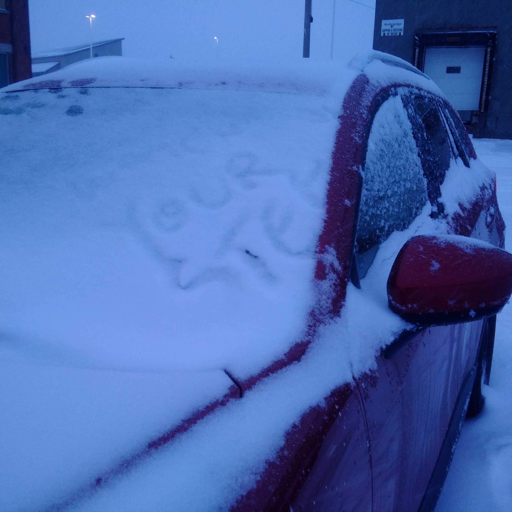

I haven't done a lot of coding since finishing my university computer science program about 11 years ago, as I've focused primarily on testing, quality strategy, and people leadership in my career so far. In the past year or so, though, I've taken on two coding projects: one was building data analysis tools for the Code Stewardship initiative I worked on, and the other is building this web site (if you couldn't tell by the less-than-amazing layout and design so far... but my goal is to learn and experiment, not necessarily to make a beautiful web site :) ).
Anyway, something that has struck me repeatedly is that it often feels like any programming task I want to tackle is already fully solved in a well-known way. For example, I thought it'd be fun to build an image gallery "from scratch"; turns out an image gallery was one of the first examples in an intro to CSS tutorial I came across. Then I thought I could do something cool with Twitter APIs to pull in the latest activity from my account and display it on my home page; turns out all you have to do is check a bunch of boxes in a UI and then Twitter automatically generates some JS you can copy. Add a button to follow me on Github? Same deal. Display some basic info from my LinkedIn profile? Yep, same thing. And when I was building my data analysis tools in Python, any time I'd notice that I was spending more than a couple minutes mapping out an algorithm, a quick Google search would show me that there were already well-established libraries to accomplish exactly what I'd been planning.
As much as this is going to make me sound like an old person, I don't remember there being so many existing, shared, and open source solutions to everything when I was first learning programming. (For one thing, stackoverflow.com didn't exist when I graduated.) I guess being a software developer these days is more about creatively tweaking or combining existing building blocks for new purposes. And I think this is actually a good thing.
Obviously, it means developers can spend their time solving more interesting, challenging, and unique problems. From a quality perspective, using standard libraries or generated code certainly reduces the surface area where new bugs could be introduced. And perhaps all of this re-use also makes programming more accessible to more people (as in, I wouldn't even need to know what an API is in order to display a nice-looking live Twitter feed on my site).
In Software Organizations
I also get this feeling (i.e., that everything has been done before) more and more frequently as I progress through my career. I worked at one company for the first 8 years or so after graduation, and didn't venture outside of its walls very often for learning or problem solving ideas. I think I felt overwhelmed enough by just trying to stay afloat with day to day tasks, and figuring out how to operate effectively in a large organization. Being somewhat isolated from the rest of the industry somehow led me to believe everything we were doing was totally unique and special, and we'd therefore need to figure out how to tackle our challenges all on our own.
These days I am a lot more involved in the larger software community, and the more I explore it the more I realize that almost everyone is facing (or has faced) very similar challenges, and that there is a LOT we can learn from each other. This applies to technical issues, people and culture problems, and even seemingly trivial things like deciding how seating plans are organized. I don't recall exactly when the shift happened for me, but now when I come across a new problem, instead of thinking "I am the first person to ever encounter this" I always think "I wonder who has solved this before, and how I can figure out who they are". If initial research doesn't turn up any information about the problem I'm interested in, I start to question whether I'm on the right track at all, and if I should consider changing my approach altogether - maybe I'm trying to solve the wrong problem.
In Engineering in General
Furthermore, it's not only software or tech where this concept of incorporating and learning from existing solutions applies. Lately, I've been really interested in the idea of biomimicry. From biomimicry.org:
"The core idea is that nature has already solved many of the problems we are grappling with. Animals, plants, and microbes are the consummate engineers. After billions of years of research and development, failures are fossils, and what surrounds us is the secret to survival."
"You could look at nature as being like a catalog of products, and all of those have benefited from a 3.8 billion year research and development period. And given that level of investment, it makes sense to use it."
I'm not sure yet what I'm planning to do in this space (if anything), but there sure are a lot of interesting things to read and think about.
A Challenge
What problem are you currently trying to solve that probably already has a solution?
In closing, here's an entertaining webinar by James Bach on how to incorporate techniques from the animal kingdom into test strategies:
And I'm sure I'll be able to find a more meaty programming challenge to solve soon enough!
, TF
MARCH 1, 2018
New problems are rare
MARCH 1, 2018
New problems are rare
In Software Development
I haven't done a lot of coding since finishing my university computer science program about 11 years ago, as I've focused primarily on testing, quality strategy, and people leadership in my career so far. In the past year or so, though, I've taken on two coding projects: one was building data analysis tools for the Code Stewardship initiative I worked on, and the other is building this web site (if you couldn't tell by the less-than-amazing layout and design so far... but my goal is to learn and experiment, not necessarily to make a beautiful web site :) ).
Anyway, something that has struck me repeatedly is that it often feels like any programming task I want to tackle is already fully solved in a well-known way. For example, I thought it'd be fun to build an image gallery "from scratch"; turns out an image gallery was one of the first examples in an intro to CSS tutorial I came across. Then I thought I could do something cool with Twitter APIs to pull in the latest activity from my account and display it on my home page; turns out all you have to do is check a bunch of boxes in a UI and then Twitter automatically generates some JS you can copy. Add a button to follow me on Github? Same deal. Display some basic info from my LinkedIn profile? Yep, same thing. And when I was building my data analysis tools in Python, any time I'd notice that I was spending more than a couple minutes mapping out an algorithm, a quick Google search would show me that there were already well-established libraries to accomplish exactly what I'd been planning.
As much as this is going to make me sound like an old person, I don't remember there being so many existing, shared, and open source solutions to everything when I was first learning programming. (For one thing, stackoverflow.com didn't exist when I graduated.) I guess being a software developer these days is more about creatively tweaking or combining existing building blocks for new purposes. And I think this is actually a good thing.
Obviously, it means developers can spend their time solving more interesting, challenging, and unique problems. From a quality perspective, using standard libraries or generated code certainly reduces the surface area where new bugs could be introduced. And perhaps all of this re-use also makes programming more accessible to more people (as in, I wouldn't even need to know what an API is in order to display a nice-looking live Twitter feed on my site).
In Software Organizations
I also get this feeling (i.e., that everything has been done before) more and more frequently as I progress through my career. I worked at one company for the first 8 years or so after graduation, and didn't venture outside of its walls very often for learning or problem solving ideas. I think I felt overwhelmed enough by just trying to stay afloat with day to day tasks, and figuring out how to operate effectively in a large organization. Being somewhat isolated from the rest of the industry somehow led me to believe everything we were doing was totally unique and special, and we'd therefore need to figure out how to tackle our challenges all on our own.
These days I am a lot more involved in the larger software community, and the more I explore it the more I realize that almost everyone is facing (or has faced) very similar challenges, and that there is a LOT we can learn from each other. This applies to technical issues, people and culture problems, and even seemingly trivial things like deciding how seating plans are organized. I don't recall exactly when the shift happened for me, but now when I come across a new problem, instead of thinking "I am the first person to ever encounter this" I always think "I wonder who has solved this before, and how I can figure out who they are". If initial research doesn't turn up any information about the problem I'm interested in, I start to question whether I'm on the right track at all, and if I should consider changing my approach altogether - maybe I'm trying to solve the wrong problem.
In Engineering in General
Furthermore, it's not only software or tech where this concept of incorporating and learning from existing solutions applies. Lately, I've been really interested in the idea of biomimicry. From biomimicry.org:
"The core idea is that nature has already solved many of the problems we are grappling with. Animals, plants, and microbes are the consummate engineers. After billions of years of research and development, failures are fossils, and what surrounds us is the secret to survival."
"You could look at nature as being like a catalog of products, and all of those have benefited from a 3.8 billion year research and development period. And given that level of investment, it makes sense to use it."
I'm not sure yet what I'm planning to do in this space (if anything), but there sure are a lot of interesting things to read and think about.
A Challenge
What problem are you currently trying to solve that probably already has a solution?
In closing, here's an entertaining webinar by James Bach on how to incorporate techniques from the animal kingdom into test strategies:
And I'm sure I'll be able to find a more meaty programming challenge to solve soon enough!
, TF
FEBRUARY 8, 2018
Things I learned while writing an article about things I learned
FEBRUARY 8, 2018
Things I learned while writing an article about things I learned
Last year, I conducted a 12 month experiment related to implementing Code Stewardship at my organization. It went ok; I think I made some progress, and I think I learned some useful things. As a next step, I felt I had these options:
Do nothing; maybe switch focus to some other initiative
Extend the experiment; i.e., continue working on it
Share what I'd learned; e.g. internal blog post, post on my web site, perhaps write a talk and submit to a conference somewhere
I was having trouble deciding which one to choose. I procrastinated on making the decision for a month or so, but not deciding was bothering me. I felt like I was starting to default to Option 1, but if that's where things ended up I wanted it to be a conscious decision rather than just the path of least resistance.
I realized that I probably didn't have enough information to make the decision, which could be why I kept putting it off. For example, how could I decide between Option 1 and Option 2 if I didn't take time to think really critically about what impact my work was having? I decided to try Option 3, but to allow myself the potential outcome of not ever sharing what I wrote if it didn't feel useful enough.
And here's what I learned while writing that article:
Taking the time to retro on things I do, especially things I spent a lot of time on, just feels better. I think I prefer being sure that I haven't achieved something, over not being sure if I did. Closure is important.
Summarizing and reflecting is a great way to uncover things I've learned or taken away from an experience that I didn't realize I had. Exactly what I've learned is not always obvious.
If I do decide to share my reflections, other people will have really cool perspectives and thoughts about what I did that I may not have considered. Being really close to the work for a long time means it's hard to think about it in new ways.
I better stop here. My manager says that if I think too hard about this, I might end up in an infinite loop.
...what did I learn while writing this article about things I learned while writing an article about things I learned...? :)
, TF
JANUARY 29, 2018
The power to react positively
JANUARY 29, 2018
The power to react positively
One night last week, I was leaving work. It was dark and rainy, and because the temperature was hovering around zero, it was also icy. I was waiting to cross the street to get to my parking lot.
The light changed. After checking that the intersection was clear, I started making my way across the street. It started raining harder, and the ground was slippery. I put up my hood and kept my gaze downwards, looking for icy patches.
Suddenly, despite looking at the ground, I noticed an increasingly bright light to my left. I looked up and was nearly blinded by a set of headlights just a few meters away. A car was making a left turn directly into my path, and was not slowing down.
The vehicle was close enough that I instinctually put my arms out in front of me in a "stop" gesture, as though that would help. At this point, the driver saw me and slammed on the brakes. Due to the ice on the road, the car continued to skid towards me. I managed to jump out of the way at the last moment.
This was a legitimately close call. But the moment I knew I was out of harm's way, this is the thought that popped into my head:
"That must have been really scary for the driver."
REALLY? I was almost just hit by a car while crossing the street at a green light. This was clearly an error on the part of the driver. What is wrong with me that my first thought is about how it must have been scary for THEM?
The thing is though, I have been that driver. When it's late, and it's dark, and it's raining, and I just spent 10 minutes in the cold scraping ice off my windows, and I'm trying to think about what we have in the house that I could make for dinner - it is not very hard to imagine accidentally missing the fact that a single person in a dark coat had started to cross the street.
I'm not a bad driver, and I'm not a bad person. But sometimes, I make mistakes, and so does everyone else. And if I had been that person, making that mistake, I would have been horrified and embarassed about coming so close to hitting a pedestrian who clearly had the right of way. Knowing that this kind of thing can easily happen to all of us, why would I bother getting upset?
Even if I'm wrong, and this driver was being reckless and irresponsible and didn't feel bad at all, there is still no reason why I should let them ruin my evening (or even the next 5 minutes) by getting upset about it. Here's a thing I read recently that sums up what I'm trying to say:
"How you react is the only thing you can control. So, when bad stuff happens, you're in control. You determine the reaction which will determine how you feel. Don't make yourself feel bad when you have the power to react positively and feel good."(from Tim Denning's summary of the book "Tribe of Mentors")
This applies to so many things - things that happen at work, things that happen at home, things that happen in your town, things that happen across the world, things that you wish you'd done differently, things that you didn't have control over anyway. I choose to believe that the world is (for the most part) full of good people with good intentions, and it makes me a happier person because I don't feel personally attacked by the things that are happening around me.
On my way home after writing this post, someone left me a nice piece of evidence that I'm not crazy to believe this.

"Watch Your Step -->", in reference to an ice patch that had formed next to my car and was now hidden by the fresh snow
, TF
JANUARY 25, 2018
It's not for you, it's for me.
JANUARY 25, 2018
It's not for you, it's for me.
I'm making this web site because I want to:
Have a place where I can share slides from my talks
Practice writing
Document/observe how my learning and interests change over time
Practice working with technology I don't normally get around to playing with
If others can also benefit from what I post here, that's even better! But it's not required.
I think this will be important for me to remember. If I don't post here unless I am certain that others will benefit from what I'm saying, I'll probably never write anything :)